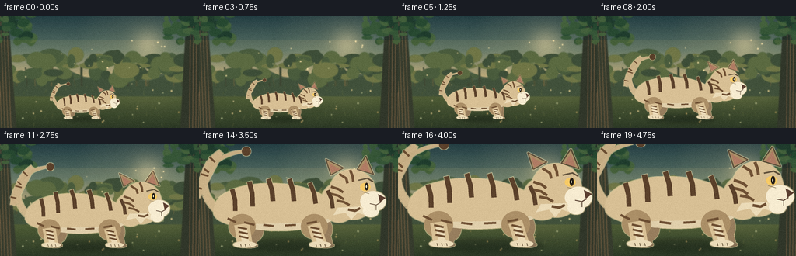
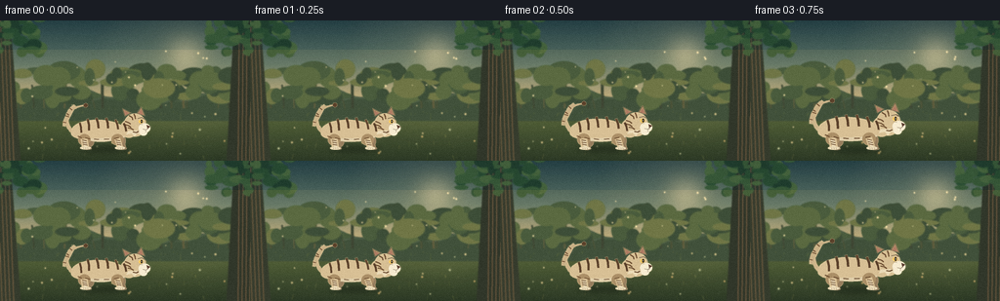
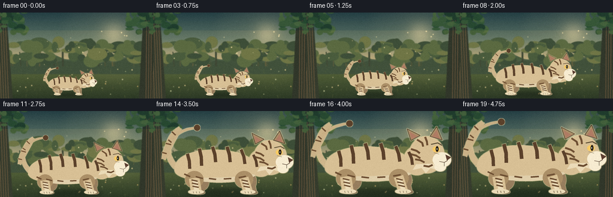
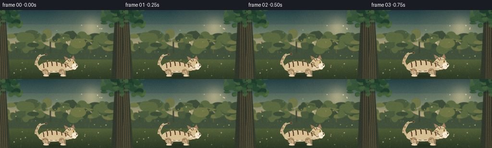

CODING AGENTS AS PIXEL WORLD MODELS
traex/DeepSeek-V4.1-Flash · instance_preservation_0053
点击播放 · 原生 RGB 像素
逐轮保存的候选
回放视频、检查图与代码变化。
每份候选均可单独播放。实际图片检查记录在下方工具轨迹中。
候选 01播放与检查图
点击播放 · 原生 RGB 像素


展开代码变化
--- 上一保存版本
+++ 本次保存版本
@@ -0,0 +1,557 @@
+from __future__ import annotations
+
+import math
+import random
+from pathlib import Path
+
+import numpy as np
+from PIL import Image, ImageChops, ImageDraw, ImageFilter
+
+import artifact_io
+
+
+CASE_DIR = Path(__file__).resolve().parent
+WIDTH, HEIGHT = 256, 144
+FRAMES, FPS = 20, 4.0
+SS = 4
+CW, CH = WIDTH * SS, HEIGHT * SS
+
+
+def lerp(a, b, t):
+ return a + (b - a) * t
+
+
+def mix_color(a, b, t):
+ return tuple(int(round(lerp(x, y, t))) for x, y in zip(a, b))
+
+
+def vertical_gradient(stops):
+ image = np.zeros((CH, CW, 3), dtype=np.float32)
+ for y in range(CH):
+ t = y / (CH - 1)
+ for i in range(len(stops) - 1):
+ y0, c0 = stops[i]
+ y1, c1 = stops[i + 1]
+ if y0 <= t <= y1:
+ u = (t - y0) / max(1e-6, y1 - y0)
+ image[y, :, :] = np.array(mix_color(c0, c1, u), dtype=np.float32)
+ break
+ return image
+
+
+def ellipse(draw, box, fill, outline=None, width=1):
+ x0, y0, x1, y1 = box
+ draw.ellipse(
+ (round(x0), round(y0), round(x1), round(y1)),
+ fill=fill,
+ outline=outline,
+ width=max(1, int(round(width))),
+ )
+
+
+def line(draw, points, fill, width, joint="curve"):
+ draw.line(
+ [(round(x), round(y)) for x, y in points],
+ fill=fill,
+ width=max(1, int(round(width))),
+ joint=joint,
+ )
+
+
+def bezier_points(points, samples=48):
+ pts = [np.array(p, dtype=np.float64) for p in points]
+ out = []
+ for i in range(samples + 1):
+ t = i / samples
+ work = [p.copy() for p in pts]
+ while len(work) > 1:
+ work = [(1 - t) * a + t * b for a, b in zip(work[:-1], work[1:])]
+ p = work[0]
+ out.append(tuple(p))
+ return out
+
+
+def make_background(phase):
+ # A soft sunrise clearing gives the beige subject a clean, warm silhouette.
+ arr = vertical_gradient(
+ [
+ (0.00, (37, 63, 68)),
+ (0.31, (95, 118, 103)),
+ (0.56, (193, 174, 127)),
+ (0.63, (112, 120, 76)),
+ (0.70, (72, 90, 53)),
+ (1.00, (34, 51, 34)),
+ ]
+ )
+ bg = Image.fromarray(np.clip(arr, 0, 255).astype(np.uint8), "RGB").convert("RGBA")
+ draw = ImageDraw.Draw(bg, "RGBA")
+
+ # Sun and atmospheric glow.
+ glow = Image.new("RGBA", (CW, CH), (0, 0, 0, 0))
+ gd = ImageDraw.Draw(glow, "RGBA")
+ sun_x, sun_y = 190 * SS, 36 * SS
+ for radius, alpha in [(90, 10), (68, 15), (47, 24), (27, 42)]:
+ ellipse(
+ gd,
+ (sun_x - radius * SS, sun_y - radius * SS, sun_x + radius * SS, sun_y + radius * SS),
+ (255, 226, 161, alpha),
+ )
+ ellipse(gd, (sun_x - 13 * SS, sun_y - 13 * SS, sun_x + 13 * SS, sun_y + 13 * SS), (255, 235, 186, 180))
+ glow = glow.filter(ImageFilter.GaussianBlur(10 * SS))
+ bg = Image.alpha_composite(bg, glow)
+ draw = ImageDraw.Draw(bg, "RGBA")
+
+ # Layered distant hills.
+ hill_back = []
+ for x in range(-20, WIDTH + 24, 4):
+ y = 75 + 4.0 * math.sin(x * 0.055 + 0.5) + 2.2 * math.sin(x * 0.13)
+ hill_back.append((x * SS, y * SS))
+ hill_back += [(WIDTH * SS, 100 * SS), (-20 * SS, 100 * SS)]
+ draw.polygon(hill_back, fill=(65, 87, 69, 175))
+
+ hill_front = []
+ for x in range(-20, WIDTH + 24, 3):
+ y = 82 + 3.3 * math.sin(x * 0.073 + 1.8) + 1.8 * math.sin(x * 0.17)
+ hill_front.append((x * SS, y * SS))
+ hill_front += [(WIDTH * SS, 103 * SS), (-20 * SS, 103 * SS)]
+ draw.polygon(hill_front, fill=(53, 75, 56, 195))
+
+ rng = random.Random(1407)
+
+ # Distant tree trunks and a textured wall of foliage.
+ for i in range(22):
+ x = rng.uniform(-6, WIDTH + 6) * SS
+ y0 = rng.uniform(54, 79) * SS
+ width = rng.uniform(1.0, 3.2) * SS
+ shade = rng.choice([(48, 63, 49, 150), (60, 73, 53, 130), (76, 83, 58, 110)])
+ draw.line([(x, y0), (x + rng.uniform(-3, 3) * SS, 90 * SS)], fill=shade, width=int(width))
+
+ for i in range(82):
+ x = rng.uniform(-10, WIDTH + 10) * SS
+ y = rng.uniform(49, 83) * SS
+ rw = rng.uniform(5, 18) * SS
+ rh = rng.uniform(3, 11) * SS
+ shade = rng.choice(
+ [
+ (40, 66, 50, 105),
+ (53, 81, 57, 110),
+ (69, 96, 61, 95),
+ (88, 108, 67, 80),
+ ]
+ )
+ ellipse(draw, (x - rw, y - rh, x + rw, y + rh), shade)
+
+ # Midground clearing floor with directional mowing and small flowers.
+ for i in range(150):
+ x = rng.uniform(0, WIDTH) * SS
+ y = rng.uniform(88, 144) * SS
+ depth = (y / (CH - 1) - 0.61) / 0.39
+ color = rng.choice(
+ [
+ (58, 79, 43, 70),
+ (92, 110, 60, 55),
+ (36, 61, 38, 65),
+ (119, 126, 73, 42),
+ ]
+ )
+ sway = math.sin(phase * math.tau + x * 0.004) * (0.5 + depth) * SS
+ h = rng.uniform(1.2, 4.5) * SS * (0.45 + depth)
+ draw.line([(x, y), (x + sway, y - h)], fill=color, width=max(1, int(SS * 0.45)))
+
+ for i in range(26):
+ x = rng.uniform(7, WIDTH - 7) * SS
+ y = rng.uniform(92, 138) * SS
+ r = rng.uniform(0.45, 1.05) * SS
+ petal = rng.choice([(229, 214, 157, 160), (213, 181, 115, 145), (201, 218, 172, 125)])
+ ellipse(draw, (x - r, y - r, x + r, y + r), petal)
+ ellipse(draw, (x - r * 0.3, y - r * 0.3, x + r * 0.3, y + r * 0.3), (139, 111, 62, 175))
+
+ # Foreground framing trunks keep the composition deep without covering the tiger.
+ def trunk(x, lean, color):
+ top = -8 * SS
+ bottom = 144 * SS
+ poly = [
+ (x - 11 * SS, top),
+ (x + 8 * SS, top),
+ (x + lean + 14 * SS, bottom),
+ (x + lean - 15 * SS, bottom),
+ ]
+ draw.polygon(poly, fill=color)
+ for k in range(4):
+ xx = x + (k - 1.5) * 4 * SS
+ line(
+ draw,
+ [(xx, top), (xx + lean * 0.82 + 2 * SS, bottom)],
+ (116, 93, 67, 45),
+ SS * 0.7,
+ )
+
+ trunk(2 * SS, 5 * SS, (45, 54, 43, 245))
+ trunk(251 * SS, -4 * SS, (39, 48, 39, 248))
+
+ # Canopy leaves at the top corners.
+ for side in (0, 1):
+ for i in range(38):
+ base_x = rng.uniform(-5, 43) if side == 0 else rng.uniform(213, 261)
+ base_y = rng.uniform(-8, 33)
+ rx = rng.uniform(3.0, 10.5) * SS
+ ry = rng.uniform(2.0, 6.5) * SS
+ c = rng.choice(
+ [
+ (33, 62, 43, 235),
+ (42, 76, 49, 225),
+ (58, 91, 55, 205),
+ (74, 104, 60, 185),
+ ]
+ )
+ ellipse(
+ draw,
+ (
+ base_x * SS - rx,
+ base_y * SS - ry,
+ base_x * SS + rx,
+ base_y * SS + ry,
+ ),
+ c,
+ )
+
+ # A few luminous dust motes animate gently in the sunbeam.
+ for i in range(18):
+ bx = rng.uniform(35, 222)
+ by = rng.uniform(28, 112)
+ px = (bx + math.sin(phase * math.tau + i * 1.7) * (1.5 + i % 3)) * SS
+ py = (by + math.cos(phase * math.tau * 0.7 + i) * 2.0) * SS
+ r = rng.uniform(0.35, 1.0) * SS
+ ellipse(draw, (px - r, py - r, px + r, py + r), (255, 238, 184, 75))
+
+ # Gentle warm/cool grading and optical softness.
+ bg = bg.filter(ImageFilter.GaussianBlur(0.55 * SS))
+ bg = bg.resize((WIDTH, HEIGHT), Image.Resampling.LANCZOS)
+ overlay = Image.new("RGBA", (WIDTH, HEIGHT), (0, 0, 0, 0))
+ od = ImageDraw.Draw(overlay, "RGBA")
+ od.rectangle((0, 0, WIDTH, HEIGHT), fill=(255, 185, 99, 12))
+ od.rectangle((0, 0, WIDTH, 29), fill=(23, 55, 62, 22))
+ return Image.alpha_composite(bg, overlay).convert("RGB")
+
+
+def tail_path(cx, gy, scale, sway):
+ pts = [
+ (-94, -55),
+ (-128, -79),
+ (-126, -126),
+ (-91, -149),
+ (-57, -150),
+ ]
+ curved = []
+ for a, b, c, d in zip(pts[:-1], pts[1:], pts[2:], pts[3:]):
+ curved.extend(bezier_points([a, b, c, d], samples=20))
+ shifted = []
+ for i, (x, y) in enumerate(curved):
+ u = i / max(1, len(curved) - 1)
+ x += math.sin(u * math.pi * 1.5) * sway * u
+ shifted.append((cx + x * scale * SS, gy + y * scale * SS))
+ return shifted
+
+
+def draw_tiger(scale, phase):
+ layer = Image.new("RGBA", (CW, CH), (0, 0, 0, 0))
+ d = ImageDraw.Draw(layer, "RGBA")
+
+ cx = 104 * SS
+ gy = 132 * SS
+ sway = 5.5 * math.sin(phase * math.tau - 0.4)
+ bob = 0.8 * math.sin(phase * math.tau * 2.0)
+
+ def pt(x, y):
+ return (cx + x * scale * SS, gy + (y + bob) * scale * SS)
+
+ def box(x0, y0, x1, y1):
+ p0, p1 = pt(x0, y0), pt(x1, y1)
+ return (p0[0], p0[1], p1[0], p1[1])
+
+ def sw(v):
+ return max(1.0, v * scale * SS)
+
+ base = (216, 192, 149, 255)
+ base_light = (235, 219, 184, 255)
+ base_shadow = (171, 143, 103, 255)
+ far_shadow = (151, 126, 94, 255)
+ cream = (247, 236, 209, 255)
+ cream_shadow = (224, 207, 171, 255)
+ stripe = (91, 65, 43, 255)
+ stripe_soft = (111, 79, 51, 245)
+ outline = (92, 72, 51, 210)
+
+ # Tail, including a tapered dark tip and wrapped stripes.
+ tail = tail_path(cx, gy, scale, sway)
+ for i in range(len(tail) - 1):
+ u = i / (len(tail) - 1)
+ width = sw(lerp(13.0, 4.2, u))
+ col = mix_color(base, base_shadow, 0.18 + 0.22 * u)
+ line(d, [tail[i], tail[i + 1]], col, width)
+ for frac in (0.30, 0.44, 0.58, 0.72):
+ idx = int(frac * (len(tail) - 2))
+ p0, p1 = tail[idx], tail[idx + 1]
+ dx, dy = p1[0] - p0[0], p1[1] - p0[1]
+ mag = max(1e-6, math.hypot(dx, dy))
+ nx, ny = -dy / mag, dx / mag
+ half = sw(lerp(10.5, 5.0, frac)) * 0.72
+ line(
+ d,
+ [(p0[0] - nx * half, p0[1] - ny * half), (p0[0] + nx * half, p0[1] + ny * half)],
+ stripe_soft,
+ sw(3.0),
+ )
+ tip = tail[-1]
+ r = sw(7.0)
+ ellipse(d, (tip[0] - r, tip[1] - r, tip[0] + r, tip[1] + r), stripe)
+
+ # Far legs sit behind the body and use a cooler shadow tone.
+ for hip_x, foot_x, phase_shift in [(-42, -47, 0.35), (66, 73, 0.8)]:
+ ellipse(d, box(hip_x - 15, -48, hip_x + 16, -8), far_shadow)
+ line(
+ d,
+ [pt(hip_x, -33), pt(foot_x, -4)],
+ far_shadow,
+ sw(19.0),
+ )
+ ellipse(d, box(foot_x - 15, -7, foot_x + 12, 1.5), (137, 115, 87, 255))
+
+ # Main torso.
+ body_pts = bezier_points(
+ [
+ (-104, -53),
+ (-108, -88),
+ (-67, -107),
+ (-20, -108),
+ (31, -109),
+ (77, -99),
+ (96, -74),
+ (103, -65),
+ (103, -49),
+ (91, -38),
+ (72, -25),
+ (26, -20),
+ (-22, -22),
+ (-69, -27),
+ (-101, -35),
+ (-104, -53),
+ ],
+ samples=72,
+ )
+ d.polygon([pt(x, y) for x, y in body_pts], fill=base)
+
+ # Pale chest and belly band.
+ belly = bezier_points(
+ [
+ (88, -48),
+ (75, -30),
+ (30, -20),
+ (-12, -22),
+ (-53, -24),
+ (-82, -31),
+ (-89, -39),
+ (-72, -39),
+ (-34, -35),
+ (18, -34),
+ (58, -38),
+ (88, -48),
+ ],
+ samples=54,
+ )
+ d.polygon([pt(x, y) for x, y in belly], fill=cream_shadow)
+
+ # Near legs with shoulder/haunch masses.
+ for hip_x, foot_x, leg_w, paw_w in [(-60, -55, 24, 18), (53, 63, 21, 17)]:
+ ellipse(d, box(hip_x - 20, -52, hip_x + 22, -13), base_shadow)
+ line(d, [pt(hip_x, -36), pt(foot_x, -5)], base, sw(leg_w))
+ line(d, [pt(hip_x + 2, -30), pt(foot_x + 1, -6)], base_light, sw(leg_w * 0.46))
+ ellipse(d, box(foot_x - paw_w, -9, foot_x + paw_w, 1), base_light)
+ # Paw toe separations.
+ for toe in (-7, 0, 7):
+ line(
+ d,
+ [pt(foot_x + toe, -5), pt(foot_x + toe + 1.2, -1)],
+ (133, 107, 78, 170),
+ sw(1.1),
+ )
+
+ # Neck bridge and head.
+ ellipse(d, box(64, -101, 121, -39), base)
+ ellipse(d, box(76, -122, 151, -43), base)
+ # Cheek ruff.
+ ruff = [pt(91, -62), pt(84, -50), pt(103, -54), pt(112, -43), pt(122, -54), pt(140, -48), pt(137, -64)]
+ d.polygon(ruff, fill=base_light)
+
+ # Ears behind the head crown.
+ left_ear = [pt(80, -113), pt(72, -138), pt(100, -124)]
+ right_ear = [pt(121, -122), pt(135, -143), pt(147, -114)]
+ for ear, inner in [
+ (left_ear, [pt(81, -116), pt(77, -132), pt(94, -122)]),
+ (right_ear, [pt(125, -121), pt(135, -136), pt(142, -116)]),
+ ]:
+ d.polygon(ear, fill=base_shadow)
+ d.polygon(inner, fill=(176, 124, 100, 255))
+ d.line(ear + [ear[0]], fill=outline, width=max(1, int(sw(1.8))))
+
+ # Muzzle, chin, nose and mouth.
+ ellipse(d, box(126, -88, 166, -56), cream)
+ ellipse(d, box(130, -67, 155, -47), cream)
+ d.polygon([pt(154, -83), pt(166, -77), pt(157, -70)], fill=(91, 62, 48, 255))
+ line(d, [pt(158, -70), pt(151, -66), pt(141, -68)], (91, 62, 48, 220), sw(1.35))
+ line(d, [pt(151, -66), pt(151, -58)], (91, 62, 48, 175), sw(1.0))
+
+ # Eye and brow.
+ ellipse(d, box(126, -101, 142, -88), (247, 202, 101, 255))
+ ellipse(d, box(133, -101, 139, -89), (45, 36, 27, 255))
+ ellipse(d, box(133.8, -99, 137.2, -91), (20, 18, 16, 255))
+ ellipse(d, box(134.8, -97, 136.4, -93), (255, 246, 215, 235))
+ line(d, [pt(123, -105), pt(137, -108), pt(146, -103)], outline, sw(2.2))
+ line(d, [pt(129, -87), pt(140, -84)], (117, 85, 61, 150), sw(0.9))
+
+ # Forehead and cheek markings.
+ face_stripes = [
+ [pt(93, -115), pt(104, -108), pt(106, -100)],
+ [pt(110, -121), pt(114, -111), pt(115, -103)],
+ [pt(80, -95), pt(92, -91), pt(99, -86)],
+ [pt(79, -84), pt(91, -81), pt(100, -75)],
+ [pt(89, -73), pt(100, -71), pt(109, -66)],
+ [pt(107, -59), pt(118, -57), pt(126, -61)],
+ ]
+ for pts in face_stripes:
+ line(d, pts, stripe_soft, sw(4.1))
+
+ # Back and flank stripes: broad at the spine, tapering downward.
+ for x0, y0, x1, y1, w in [
+ (-75, -91, -70, -57, 7.0),
+ (-48, -103, -43, -64, 7.4),
+ (-18, -107, -11, -72, 7.5),
+ (15, -107, 22, -72, 7.5),
+ (47, -101, 56, -68, 7.0),
+ (75, -89, 83, -61, 6.3),
+ ]:
+ line(d, [pt(x0, y0), pt((x0 + x1) / 2 + 2, (y0 + y1) / 2), pt(x1, y1)], stripe, sw(w))
+
+ for x0, y0, x1, y1 in [
+ (-82, -45, -69, -39),
+ (-56, -39, -40, -35),
+ (-26, -35, -10, -33),
+ (8, -34, 25, -35),
+ (42, -37, 58, -40),
+ ]:
+ line(d, [pt(x0, y0), pt(x1, y1)], stripe_soft, sw(3.5))
+
+ # Leg stripes.
+ for hip_x, foot_x in [(-60, -55), (53, 63)]:
+ for u in (0.22, 0.46, 0.69):
+ x = lerp(hip_x, foot_x, u)
+ y = lerp(-37, -7, u)
+ line(d, [pt(x - 7, y - 1), pt(x + 7, y + 2)], stripe_soft, sw(3.0))
+
+ # Short fur strokes add texture while preserving the clean graphic silhouette.
+ tex = Image.new("RGBA", (CW, CH), (0, 0, 0, 0))
+ td = ImageDraw.Draw(tex, "RGBA")
+ rng = random.Random(8801)
+ for i in range(250):
+ if i % 4:
+ lx, ly = rng.uniform(-96, 98), rng.uniform(-102, -26)
+ else:
+ lx, ly = rng.uniform(82, 156), rng.uniform(-118, -50)
+ p0 = pt(lx, ly)
+ length = rng.uniform(1.5, 4.2)
+ ang = rng.uniform(-0.55, 0.55)
+ p1 = pt(lx + math.cos(ang) * length, ly + math.sin(ang) * length)
+ col = rng.choice(
+ [
+ (255, 244, 216, 32),
+ (111, 79, 52, 27),
+ (248, 230, 196, 35),
+ (86, 62, 44, 22),
+ ]
+ )
+ td.line([p0, p1], fill=col, width=max(1, int(scale * SS * 0.55)))
+
+ mask = layer.getchannel("A")
+ tex.putalpha(ImageChops.multiply(tex.getchannel("A"), mask))
+ layer = Image.alpha_composite(layer, tex)
+
+ # A subtle warm rim along the upper contour.
+ alpha = layer.getchannel("A")
+ rim_alpha = ImageChops.subtract(
+ alpha.filter(ImageFilter.MaxFilter(max(3, int(sw(2.2)) | 1))),
+ alpha,
+ )
+ rim = Image.new("RGBA", (CW, CH), (255, 231, 177, 0))
+ rim.putalpha(rim_alpha.point(lambda value: value * 0.55))
+ layer = Image.alpha_composite(rim, layer)
+ return layer
+
+
+def render_frame(index):
+ phase = index / FRAMES
+ t = index / (FRAMES - 1)
+ # Smooth growth with a tiny hold at the end makes the final size unambiguous.
+ growth_t = min(1.0, max(0.0, (t - 0.02) / 0.94))
+ eased = 0.5 - 0.5 * math.cos(math.pi * growth_t)
+ scale = lerp(0.30, 0.90, eased)
+
+ bg = make_background(phase).convert("RGBA")
+
+ # Ground shadow is rendered separately so it softens without blurring the tiger.
+ shadow = Image.new("RGBA", (WIDTH, HEIGHT), (0, 0, 0, 0))
+ sd = ImageDraw.Draw(shadow, "RGBA")
+ sw = 124 * scale
+ sh = max(3.0, 11 * scale)
+ cx = 104 + 4 * scale
+ gy = 133
+ sd.ellipse((cx - sw * 0.63, gy - sh, cx + sw * 0.72, gy + sh * 0.55), fill=(20, 29, 20, 100))
+ sd.ellipse((cx - sw * 0.50, gy - sh * 0.62, cx + sw * 0.56, gy + sh * 0.28), fill=(12, 20, 15, 95))
+ shadow = shadow.filter(ImageFilter.GaussianBlur(2.2 + 0.8 * scale))
+ bg = Image.alpha_composite(bg, shadow)
+
+ tiger_hi = draw_tiger(scale, phase)
+ tiger = tiger_hi.resize((WIDTH, HEIGHT), Image.Resampling.LANCZOS)
+ frame = Image.alpha_composite(bg, tiger).convert("RGB")
+
+ # Light vignette and fine sensor-like grain.
+ vignette = Image.new("L", (WIDTH, HEIGHT), 0)
+ vd = ImageDraw.Draw(vignette)
+ vd.ellipse((-48, -32, WIDTH + 48, HEIGHT + 38), fill=255)
+ vignette = vignette.filter(ImageFilter.GaussianBlur(20))
+ dark = Image.new("RGB", (WIDTH, HEIGHT), (13, 21, 21))
+ frame = Image.composite(frame, Image.blend(frame, dark, 0.33), vignette)
+
+ arr = np.asarray(frame, dtype=np.float32)
+ rng = np.random.default_rng(4100 + index)
+ grain = rng.normal(0.0, 2.0, size=(HEIGHT, WIDTH, 1))
+ arr = np.clip(arr + grain, 0, 255)
+ return arr.astype(np.uint8)
+
+
+def main():
+ frames = np.stack([render_frame(i) for i in range(FRAMES)], axis=0)
+ artifact_io.save(frames, CASE_DIR)
+
+ # A compact MP4 is useful when OpenCV's local encoder is available; the
+ # contract's canonical artifacts above do not depend on it.
+ try:
+ import cv2
+
+ writer = cv2.VideoWriter(
+ str(CASE_DIR / "video.mp4"),
+ cv2.VideoWriter_fourcc(*"mp4v"),
+ FPS,
+ (WIDTH, HEIGHT),
+ )
+ if writer.isOpened():
+ for frame in frames:
+ writer.write(cv2.cvtColor(frame, cv2.COLOR_RGB2BGR))
+ writer.release()
+ except Exception:
+ pass
+
+ print(f"generated {frames.shape} at {FPS:g} fps -> {CASE_DIR}")
+
+
+if __name__ == "__main__":
+ main()
候选 02播放与检查图
点击播放 · 原生 RGB 像素


展开代码变化
--- 上一保存版本
+++ 本次保存版本
@@ -83,7 +83,7 @@
(1.00, (34, 51, 34)),
]
)
- bg = Image.fromarray(np.clip(arr, 0, 255).astype(np.uint8), "RGB").convert("RGBA")
+ bg = Image.fromarray(np.clip(arr, 0, 255).astype(np.uint8)).convert("RGBA")
draw = ImageDraw.Draw(bg, "RGBA")
# Sun and atmospheric glow.
@@ -257,8 +257,8 @@
layer = Image.new("RGBA", (CW, CH), (0, 0, 0, 0))
d = ImageDraw.Draw(layer, "RGBA")
- cx = 104 * SS
- gy = 132 * SS
+ cx = 112 * SS
+ gy = 138 * SS
sway = 5.5 * math.sin(phase * math.tau - 0.4)
bob = 0.8 * math.sin(phase * math.tau * 2.0)
@@ -493,7 +493,7 @@
# Smooth growth with a tiny hold at the end makes the final size unambiguous.
growth_t = min(1.0, max(0.0, (t - 0.02) / 0.94))
eased = 0.5 - 0.5 * math.cos(math.pi * growth_t)
- scale = lerp(0.30, 0.90, eased)
+ scale = lerp(0.30, 0.80, eased)
bg = make_background(phase).convert("RGBA")
@@ -502,8 +502,8 @@
sd = ImageDraw.Draw(shadow, "RGBA")
sw = 124 * scale
sh = max(3.0, 11 * scale)
- cx = 104 + 4 * scale
- gy = 133
+ cx = 112 + 4 * scale
+ gy = 139
sd.ellipse((cx - sw * 0.63, gy - sh, cx + sw * 0.72, gy + sh * 0.55), fill=(20, 29, 20, 100))
sd.ellipse((cx - sw * 0.50, gy - sh * 0.62, cx + sw * 0.56, gy + sh * 0.28), fill=(12, 20, 15, 95))
shadow = shadow.filter(ImageFilter.GaussianBlur(2.2 + 0.8 * scale))
可观测工具轨迹
实际执行的命令与返回图片。
命令 1exit 0
/bin/bash -c "pwd && rg --files -g '"'!*.pyc'"' -g '"'!__pycache__'"' | sed -n '1,200p'"
命令 2exit 0
/bin/bash -c "printf '%s\\n' '--- prompt.txt ---'; cat prompt.txt; printf '%s\\n' '--- GENERATION_RULES.md ---'; cat GENERATION_RULES.md; printf '%s\\n' '--- task_spec.json ---'; cat task_spec.json"
命令 3exit 0
/bin/bash -c "find . -maxdepth 2 -type f -printf '%p %s bytes\\n' | sort | sed -n '1,200p'; printf '%s\\n' '--- tools ---'; command -v ffmpeg || true; command -v python3 || true; command -v node || true; command -v blender || true; command -v convert || true; command -v chromium || true"
命令 4exit 0
/bin/bash -c "sed -n '1,260p' artifact_io.py"
命令 5exit 0
/bin/bash -c "sed -n '1,260p' player_template.html"
命令 6exit 0
/bin/bash -c "python3 - <<'PY'
import importlib.util
for m in ['numpy','PIL','cv2','imageio','matplotlib','scipy','skia','cairo']:
print(m, bool(importlib.util.find_spec(m)))
PY"命令 7exit 0
/bin/bash -c 'command -v chafa || true; command -v viu || true; command -v img2txt || true; command -v ffmpeg || true; command -v magick || true'
命令 8exit 1
/bin/bash -c 'python3 generate.py'
命令 9exit 1
/bin/bash -c 'python3 generate.py'
命令 10exit 0
/bin/bash -c 'python3 generate.py'
命令 11exit 0
/bin/bash -c "python3 - <<'PY'
import numpy as np
from PIL import Image
import generate
for idx, scale in [(0, .30),(9, .61),(19,.90)]:
im=generate.draw_tiger(scale, idx/20).resize((64,36), Image.Resampling.LANCZOS)
a=np.asarray(im)[:,:,3]
chars=' .:-=+*#%@'
print('\\nFRAME',idx,'scale',scale,'bbox',im.getbbox())
for row in a:
print(''.join(chars[min(9,int(v/256*10))] for v in row))
PY"命令 12exit 0
/bin/bash -c "python3 - <<'PY'
from PIL import Image
for name in ['frames/00.png','frames/09.png','frames/19.png']:
im=Image.open(name).resize((48,27),Image.Resampling.LANCZOS)
print('\\n',name)
for y in range(0,27,2):
line=''
for x in range(48):
p=im.getpixel((x,y)); q=im.getpixel((x,min(26,y+1)))
line+=f'\\033[38;2;{p[0]};{p[1]};{p[2]}m\\033[48;2;{q[0]};{q[1]};{q[2]}mâ'
print(line+'\\033[0m')
PY"命令 13exit 0
/bin/bash -c "python3 generate.py && python3 - <<'PY' from PIL import Image import numpy as np for name in ['frames/00.png','frames/09.png','frames/19.png']: im=np.asarray(Image.open(name)) print(name, 'mean', im.mean(axis=(0,1)).round(1), 'range', (im.min(), im.max())) PY"
命令 14exit 0
/bin/bash -c "find . -maxdepth 2 -type f -printf '%p %s\\n' | sort; python3 - <<'PY'
import json,re
from pathlib import Path
import numpy as np
p=Path('pixels.npz'); z=np.load(p)
print('npz', z['pixels'].shape, z['pixels'].dtype)
frames=np.load('pixels.npz')['pixels']
print('distinct frames', len(np.unique(frames,axis=0)))
print('index.html bytes',Path('index.html').stat().st_size, 'ready token', 'window.__pixelReady=true' in Path('index.html').read_text())
print('video exists', Path('video.mp4').exists(), Path('video.mp4').stat().st_size if Path('video.mp4').exists() else 0)
PY"命令 15exit 0
/bin/bash -c "python3 - <<'PY'
from PIL import Image
import generate
for idx,scale in [(0,.30),(9,.56),(19,.80)]:
im=generate.draw_tiger(scale, idx/20)
box=im.getbbox()
im=im.resize((72,40), Image.Resampling.LANCZOS)
a=im.getchannel('A').load()
print(f'FRAME {idx:02d} scale={scale:.2f} bbox={box}')
for y in range(0,40,2):
print(''.join('##' if (a[x,y]+a[x,y+1])>200 else '++' if (a[x,y]+a[x,y+1])>40 else ' ' for x in range(72)))
PY"命令 16exit 0
/bin/bash -c "python3 - <<'PY'
import base64,json,re
from pathlib import Path
import numpy as np
html=Path('index.html').read_text()
m=re.search(r'const DATA=(\\{.*?\\}),W=',html)
assert m
D=json.loads(m.group(1))
def unpack(s):
b=base64.b64decode(s)
return np.frombuffer(b,dtype='<u4')
f=unpack(D['first'])
frames=[f.copy()]
for enc in D['deltas']:
p=unpack(enc); n=frames[-1].copy()
for i in range(0,len(p),2):
start,count=int(p[i]),int(p[i+1]); n[start:start+count]=p[i+2:i+2+count]; i+=count
frames.append(n)
arr=np.stack(frames).reshape(20,144,256)
z=np.load('pixels.npz')['pixels'].transpose(2,0,1)
print('payload',arr.shape,'canonical',z.shape,'equal',np.array_equal(arr,z))
print('size',D['width'],D['height'],'frames',D['frames'],'fps',D['fps'],'audio',D['audio'])
PY
python3 - <<'PY'
import cv2
cap=cv2.VideoCapture('video.mp4')
print('mp4 opened',cap.isOpened(),'frames',int(cap.get(cv2.CAP_PROP_FRAME_COUNT)),'fps',cap.get(cv2.CAP_PROP_FPS),'size',int(cap.get(cv2.CAP_PROP_FRAME_WIDTH)),int(cap.get(cv2.CAP_PROP_FRAME_HEIGHT)))
cap.release()
PY"命令 17exit 0
/bin/bash -c "python3 - <<'PY'
import base64,json,re
from pathlib import Path
import numpy as np
html=Path('index.html').read_text()
m=re.search(r'const DATA=(\\{.*?\\}),W=',html)
assert m
D=json.loads(m.group(1))
def unpack(s):
return np.frombuffer(base64.b64decode(s),dtype='<u4')
f=unpack(D['first'])
frames=[f.copy()]
for enc in D['deltas']:
p=unpack(enc); n=frames[-1].copy(); i=0
while i < len(p):
start,count=int(p[i]),int(p[i+1]); i+=2
n[start:start+count]=p[i:i+count]; i+=count
frames.append(n)
arr=np.stack(frames).reshape(20,144,256)
z=np.load('pixels.npz')['pixels'].transpose(2,0,1)
print('payload',arr.shape,'canonical',z.shape,'equal',np.array_equal(arr,z))
print('size',D['width'],D['height'],'frames',D['frames'],'fps',D['fps'],'audio',D['audio'])
print('unique frames',len(np.unique(arr,axis=0)))
PY"保存候选 2 份；完成命令 17 次；可验证图片返回 0 张。原始 API 响应与完整日志保留在本地。